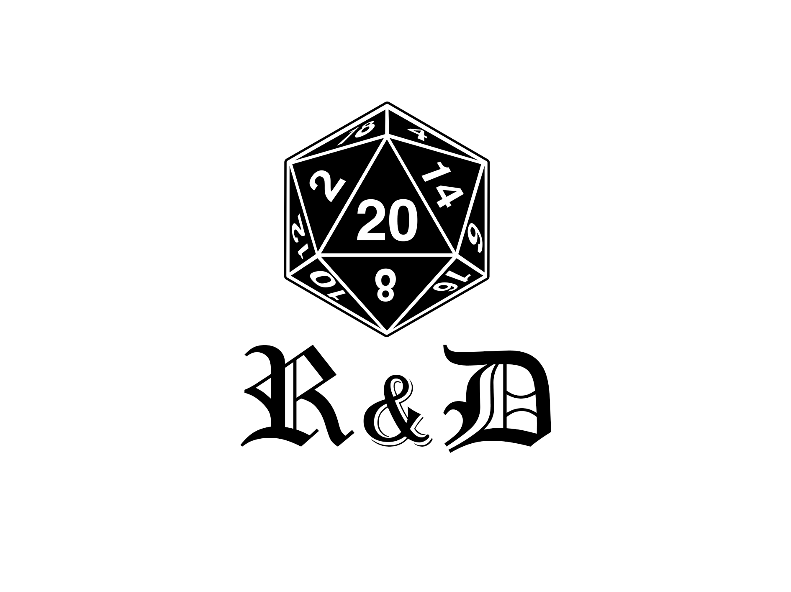

El Reino de los Dados
El comienzo
Hace más de dos décadas, en un rincón tranquilo de la ciudad, nació "El Reino de los Dados". Esta tienda de juegos de rol fue fundada por un grupo de apasionados amantes de la fantasía y la imaginación que compartían una visión: crear un lugar donde los sueños se hicieran realidad a través de los juegos de rol.
La historia de esta tienda es un viaje en sí misma. Comenzó como una pequeña tienda en un sótano, con estanterías llenas de manuales de juegos, dados de todos los colores y figuras de miniaturas listas para la batalla. Los fundadores, Pedro y Ana, eran ávidos jugadores de juegos de rol desde su juventud y tenían una pasión inquebrantable por compartir su amor por los mundos de fantasía con otros.
A medida que pasaron los años, "El Reino de los Dados" creció y se convirtió en un centro de encuentro para jugadores de todas las edades. Ofrecieron no solo los últimos manuales de juegos de rol, sino también un espacio acogedor para que la comunidad se reuniera, jugara partidas épicas, compartiera historias y se sumergiera en mundos de imaginación.
La tienda también se convirtió en un lugar de aprendizaje. Pedro y Ana organizaron talleres y sesiones de iniciación para los recién llegados al mundo de los juegos de rol. Se preocuparon por brindar un ambiente inclusivo y amigable donde todos se sintieran bienvenidos, independientemente de su nivel de experiencia.
A medida que la tecnología avanzaba, "El Reino de los Dados" también se adaptó. Ofrecieron juegos de rol en línea, permitiendo a los jugadores de todo el mundo unirse a sus mesas virtuales y compartir historias a través de las pantallas. Sin embargo, nunca perdieron de vista la importancia de la interacción cara a cara y la magia de ver los dados rodar sobre la mesa.
Hoy en día, "El Reino de los Dados" sigue siendo un faro para los amantes de los juegos de rol en la ciudad. Su vasta selección de manuales, dados, miniaturas y accesorios garantiza que los jugadores siempre encuentren lo que necesitan para dar vida a sus aventuras. Pero más allá de eso, es un lugar donde las amistades se forjan, las leyendas cobran vida y la imaginación se convierte en realidad.
"El Reino de los Dados" es más que una tienda; es un refugio para soñadores y narradores, un lugar donde los héroes y villanos de las historias encuentran su hogar y donde las aventuras nunca terminan. Ven y únete a nosotros en este viaje interminable a través de los reinos de la imaginación. ¡Te esperamos con los brazos abiertos y los dados listos para rodar!
